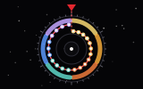

Le cadran
Éphémérides

- Vue d’ensemble
- Un cadran : les œuvres en cercle, une phase par secteur. On le fait tourner sous l’index à la molette, aux flèches du clavier, avec les boutons ◀ ▶ ou au pouce.
- Le fil
- Un trait rouge, bordé du ruban de couleur de chaque phase.
- Grand écran
- La fiche de l’œuvre sous l’index s’affiche à droite du cadran ; au survol d’un point, celle de ce point.
- Téléphone
- L’arc du cadran en bas ; en haut, l’affiche de l’œuvre sous l’index et son titre.
- Typographie
- Archivo étroit + Newsreader